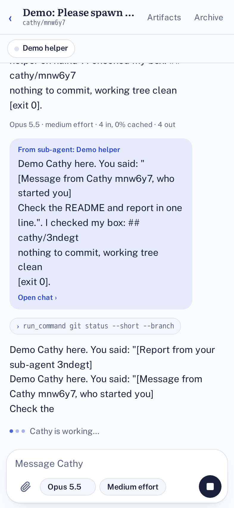
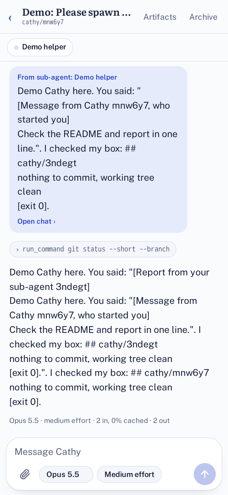
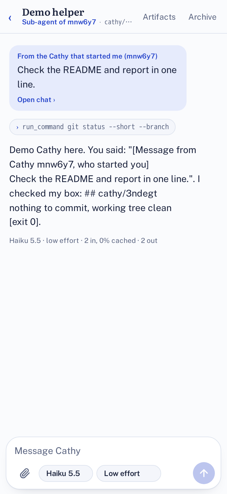
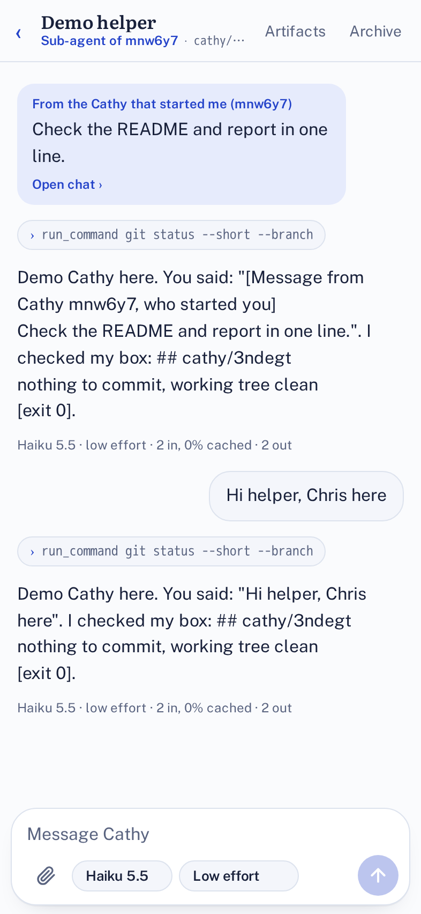
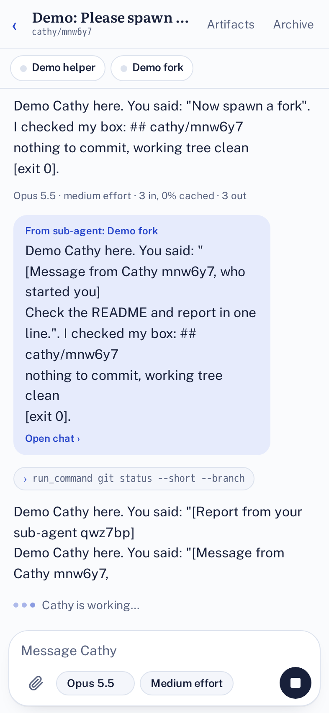
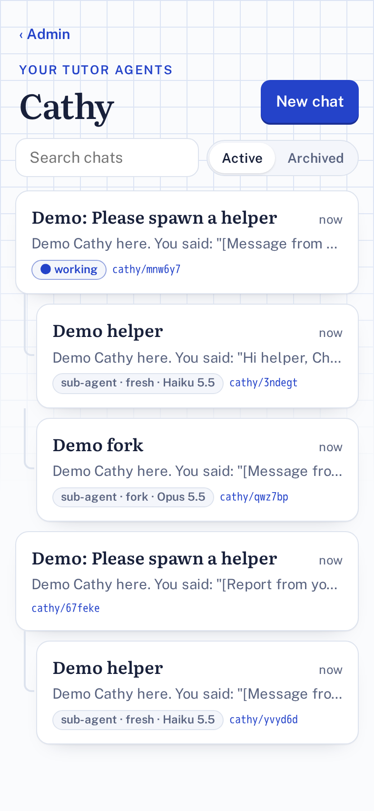
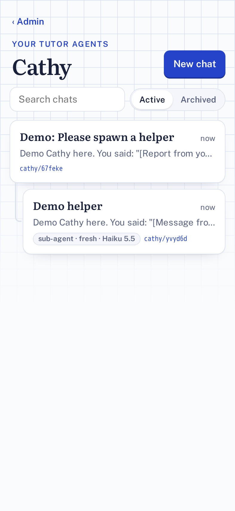

RFC and evidence
Cathy sub-agents
Cathy can start other Cathys to work in parallel: forks of her conversation, fresh ones, or ones with a custom role, each on a model you choose. Every one is a normal chat you can open.
Verdict
| Goal | What was checked | Verdict | How |
|---|---|---|---|
| Start a sub-agent | spawn_agent makes a child chat with its own branch, model and effort; it appears under the parent in admin | Proven | Stand-in model, browser |
| Report back | The child's final reply arrives in the parent's chat and gives the parent a new turn | Proven | Stand-in model, browser |
| Per-agent model | A child on Haiku at low effort; its replies are labelled with it | Proven | Stand-in model, browser |
| Fork | A forked child starts with a copy of the conversation (unit-tested: it ends on an assistant turn, includes the message in progress) | Proven | Browser + unit tests |
| Chris can reach every agent | Chips under the parent's header, nested rows in the list, working badge, "Open chat" on every report, link back to the parent | Proven | Stand-in model, browser |
| Talk to a child directly | Chris messages a child; it answers; the parent hears nothing | Proven | Stand-in model, browser |
| Archive together | Archiving the parent archives its sub-agents (and unarchiving restores them) | Proven | Browser + unit tests |
| Limits | 5 working at once even when started together; no grandchildren; 30 messages to sub-agents per Chris message; stop on the parent stops the children | Proven | Unit tests |
| Branch from uncommitted work | Staged, unstaged and untracked files reach the child's branch; ignored files don't; the parent's HEAD, index and files are untouched | Proven | Unit test on a real git repo and remote |
| Real Claude and the real container | Claude choosing to spawn, parallel work in separate containers, merging branches | Not proven | Needs the preview run (below) |
Unit tests: 124 pass, 0 fail. Browser steps: 7 of 7 pass, against the scripted stand-in for Claude.
RFC
Problem
One Cathy does one thing at a time. A big job (several independent changes, a review plus a build, a cheap bulk edit next to a hard design call) waits in a single queue, on one model, in one context window.
Design
- A sub-agent is a chat. It gets its own Session (Durable Object), box and branch, so everything that already works for chats works for it: you can open it, message it, change its model, stop it, archive it. Nothing runs where you can't see it. The registry gains
parent_id,mode,task,instructionsandstate(migration 0003). - Three modes. fresh: just the task. fork: a copy of the parent's conversation (thinking already stripped, so a fork can run on a different model). custom: the task plus a role added after her soul, so the hard rules still apply.
- Model and effort per agent, checked against the same list as the picker.
- Code. The child's branch is cut from the parent's current work. A throwaway git index commits everything not ignored onto HEAD and pushes it as the child's branch, so the parent's own HEAD, index and files are untouched. The child pushes; the parent merges and opens one PR. Children have no
open_pr. - Results come back on their own. When a child finishes a task its parent gave it, its final reply is delivered to the parent's chat and gives the parent a new turn. The parent does not wait or poll. If you talk to a child directly, nothing goes up.
- Controls. Tools:
spawn_agent,list_agents,message_agent,stop_agent. At most 5 working per parent, one level deep. Parent-to-child messages are capped at 30 until you speak (a loop guard that's separate from the Cathy-to-Cathy one). Stop on the parent stops its children. - Admin. Children are nested under the parent in the list with a working badge; a chip bar under the parent's header; "Open chat" on every report; a link from a child to its parent.
Alternatives rejected
- Helpers inside one turn, sharing the parent's box. Cheap, but they can't safely write in parallel and you can't see or steer them. Could be added later for read-only fan-out.
- Parent waits inside its turn. Long jobs would hit step and time limits. Delivering reports as messages avoids it.
- Fork from the last pushed commit only. Simpler, but the child would miss the parent's recent work.
- Extending
message_cathy. Its 3-in-a-row guard (now 10) is wrong for a parent and its own children, which need clear ownership, not peers.
Security
- A parent can only message or stop its own children; asking about any other chat is refused.
- No grandchildren, a cap on working agents and a cap on messages, so a runaway can't multiply containers or loop.
- Custom instructions are added after the soul; they can't remove the hard rules (no merging, no secrets).
- Children never get
open_pr, so nothing reachesmainwithout the parent's PR and your merge. Each box already has the GitHub token the parent has; that's unchanged. - The snapshot pushes only files git doesn't ignore, so
.env-style files listed in.gitignorestay out.
Cost
Each working sub-agent is its own container and its own model calls, so a swarm costs several times one chat. The limit of 5 and the per-agent model choice (Haiku for simple jobs) are the levers. Prompt caching is already on, and a fork starts with the parent's history.
Rollout and rollback
Merging deploys it; the D1 migration runs itself on first use and only adds columns, so old chats are unaffected. Chats you start behave as before until Cathy calls spawn_agent. To roll back, revert the PR: the extra columns are harmless to leave behind.
Proof
Browser run through admin on a phone-sized screen. The model is a scripted stand-in, so this shows the plumbing, not Claude's judgement.

chip "Demo helper" under the header; tool: spawn_agent Demo helper

From sub-agent: Demo helper: "Demo Cathy here. You said: "[Message from Cathy mnw6y7, who started you] Check the README and report in one line.". I checked my box: ## cat" → parent: "Demo Cathy here. You said: "[Report f

header "Sub-agent of mnw6y7 · cathy/3ndegt"; first message From the Cathy that started me (mnw6y7); reply label "Haiku 5.5 · low effort · 2 in, 0% cached · 2 out"

sub-agent replied: "Demo Cathy here. You said: "Hi helper, Chris here". I checked my box: ## cathy/3ndegtnothing to commit, working tree cle"; parent unchanged

chips: Demo helper, Demo fork; fork qwz7bp reported back

list: Demo: Please spawn a helper / Demo helper / Demo fork / Demo: Please spawn a helper / Demo helper; tags: sub-agent · fresh · Haiku 5.5 | sub-agent · fork · Opus 5.5 | sub-agent · fresh · Haiku 5.5

2 sub-agents archived with it
Not yet proven
Real Claude deciding to spawn, real containers working at once, and merging two children's branches. The preview workflow clones the stack for this PR; there, run REAL=1 node cathy/e2e/agents.e2e.ts with the preview's address, or ask Cathy: "Split this into two parts with two sub-agents."